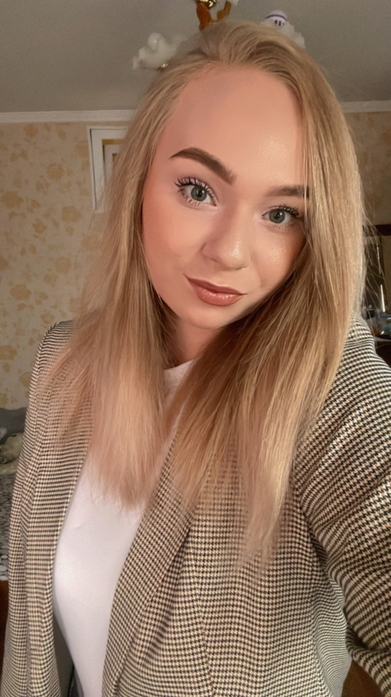

Розкажу вам про себе

У вільний час я полюбляю займатись йогою. Це відволікає мене від буденних справ та покращує моє здоров‘я. Також люблю читати психологічну літературу та слухати різноманітні вебінари.
Я навчаюсь на піарника. Величезним плюсом цієї професії є те, що вони постійно спілкуються з великою кількістю людей. А це відмінна можливість налагоджувати зв’язки, які, безсумнівно, стануть в нагоді в майбутньому. Ну і нарешті, ця робота високооплачувана. Мені подобається ця професія, і я хочу нею займатися у майбутньому.
